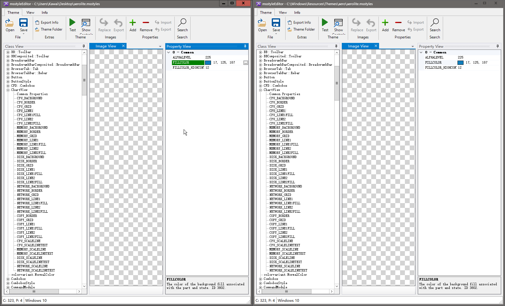
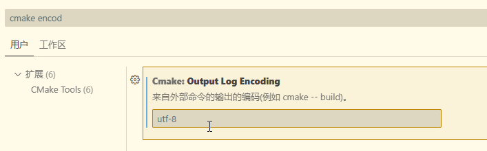
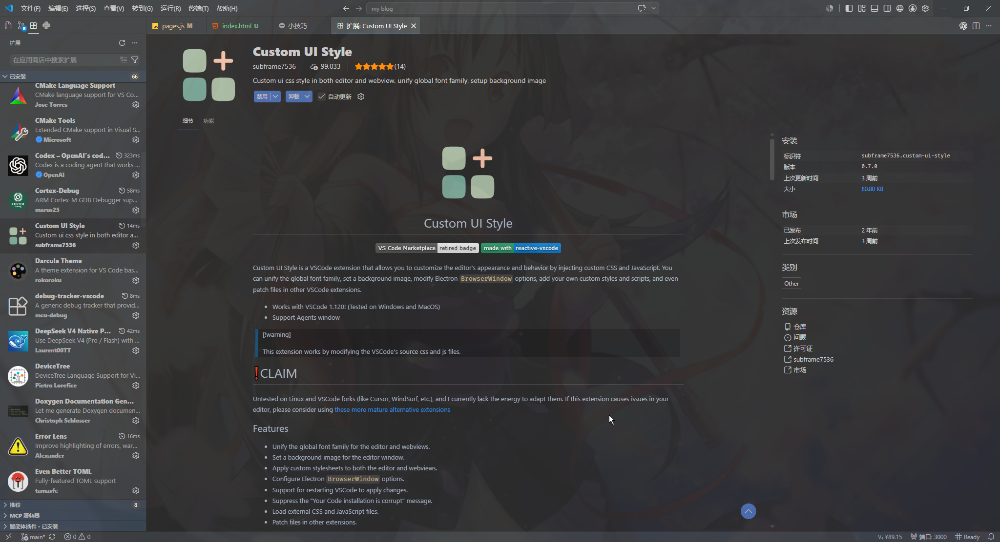

shell集成失败，检查你的shell集成
shell intergration我用的是powershell，通过winget更新后就集成失败了，运行下面的命令后就好了
if ((Get-ExecutionPolicy -Scope LocalMachine) -eq 'Undefined' -and (Get-ExecutionPolicy -Scope CurrentUser) -eq 'Undefined') {
Set-ExecutionPolicy -ExecutionPolicy RemoteSigned -Scope CurrentUser
}
实际是因为该shell含有命令行参数，来自deepseek v4 flash修复结论
"args": ["-NoExit", "-Command", "chcp 65001 | Out-Null"]
settings.json 中的终端 profile PowerShell (UTF-8) 自定义了启动参数：
VS Code 的 getShellIntegrationInjection() 对 PowerShell 只会在以下情况注入集成脚本：
参数为空 / 未定义
单个 -NoLogo（隐含参数）
-l / -login（登录参数）
或者增加轮询时间，这个会导致命令运行完成后还需要等一会才能检测到
"chat.tools.terminal.idlePollInterval": 5000,

vscode终端是uft8，而cmake默认是gbk
解决方案 将输出编码由auto改为utf-8

